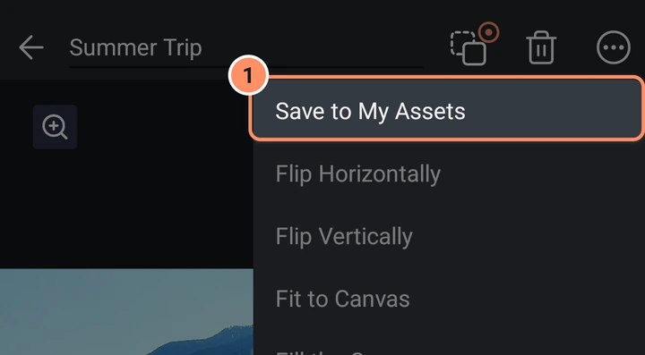

Recursos, plantillas y preajustes
Reutiliza lo mejor de tu trabajo: guarda capas como recursos, parte de plantillas y conserva tus estilos favoritos como preajustes.
En esta página
AbsentMotion ofrece tres formas de reutilizar tu trabajo. Se diferencian en lo que conservan.
| Conserva | Se usa desde | |
|---|---|---|
| Recurso | Una capa o una animación completa, vinculada a su origen | Menú Añadir, Objeto / recurso |
| Plantilla | Un proyecto completo con espacios donde puedes sustituir los medios por los tuyos | Menú Añadir, Plantilla; pantalla de inicio, Plantillas |
| Preajuste | El aspecto y el movimiento de una capa (efectos, fotogramas clave, borde, modo de fusión y más) | Cuadrícula de herramientas, Preajustes |
Recursos
Crear un recurso
- En el editor, selecciona una capa o un grupo y elige Guardar en Mis recursos en el menú de la capa. Aparece un mensaje: «Guardado en Mis recursos».
- En la pantalla de inicio, elige RECURSO en la hoja de nuevo proyecto y crea la animación en su propio proyecto. Un proyecto de recurso tiene el fondo transparente.

Los recursos aparecen en la pestaña Recursos de la pantalla de inicio.
Usar un recurso
Añadir, Objeto / recurso, Recurso / Proyecto enumera tus recursos (los más recientes primero) y después tus otros proyectos, con un cuadro de búsqueda. Toca uno para insertarlo como grupo en el cabezal de reproducción. Un recurso permanece vinculado a su recurso de origen. En cambio, un proyecto insertado de esta forma es una copia independiente normal.
Una capa vinculada tiene la herramienta Propiedades del recurso, con dos botones.
- Abrir recurso original abre el proyecto propio del recurso para que puedas cambiarlo. Si ese proyecto se ha eliminado, la app ofrece Reconstruir proyecto de origen (crear un proyecto a partir de esta capa) o Desvincular del recurso.
- Desvincular del recurso convierte la capa en un grupo normal que puedes editar libremente.
Proyectos de recursos
Dentro de un proyecto de recurso, la hoja de ajustes del proyecto tiene dos filas más.
- Precomponer elige Resolución adaptable o Resolución bloqueada para el recurso.
- Retemporización decide qué ocurre cuando el recurso se coloca en un clip más largo que su propia duración: Congelar (mantener el último fotograma de la parte central), Estirar, Bucle, Repetir y estirar o Vacío (nada después de su propia duración).
El menú de copiar y pegar también incluye Definir fin de la intro y Definir inicio del outro. Colocan marcas doradas en la regla: la parte anterior al fin de la intro y la posterior al inicio del outro mantienen su velocidad real, mientras que la parte central se estira, se reproduce en bucle o se congela.
Plantillas
Una plantilla es un proyecto terminado en el que cada imagen o vídeo es una ranura que puedes sustituir.
Usar una plantilla
- En la pantalla de inicio, abre la página Plantillas y la pestaña Mis plantillas, y toca una plantilla. Desde el editor también puedes usar Añadir, Plantilla.
- La pantalla Usar plantilla muestra una vista previa y una fila de Ranuras de medios. Toca una ranura para seleccionarla (el cabezal de reproducción salta a donde empieza) y vuelve a tocarla para elegir tu propia foto o vídeo.
- El icono de la esquina de una ranura cambia cómo se escala el medio: relleno, ajuste o estiramiento.
- Si tu vídeo es más largo que la ranura, una pantalla titulada Arrastra para seleccionar te permite elegir qué parte usar. Si es más corto, se mantiene el último fotograma y la app te lo indica.
- Toca Siguiente y luego Ir a la línea de tiempo. Se crea un proyecto nuevo. La plantilla en sí nunca cambia.
Abrir como proyecto en el menú de una plantilla se salta la pantalla de sustitución y crea un proyecto nuevo al momento. Desde ese menú también puedes cambiar el nombre de las plantillas y eliminarlas.
Crear una plantilla
- Activa el interruptor Guardar también una copia como plantilla en la pantalla de exportación antes de exportar. Guarda el proyecto con sus medios en Plantillas en este móvil y se ejecuta cuando la exportación termina correctamente.
- Los paquetes que importas desde otros editores llegan como plantillas: consulta Proyectos, copia de seguridad e importación.
Preajustes
Un preajuste conserva el aspecto de una capa para que puedas aplicarlo a otra.
Guardar un preajuste
Selecciona la capa y elige Guardar preajuste en el menú de copiar y pegar (el sexto botón de la barra de reproducción). Solo está disponible cuando la capa tiene algo que conservar: un trazo, borde o sombra, efectos, un modo de fusión distinto de Normal, una opacidad modificada, posición o tamaño animados, un volumen o una velocidad modificados, o una fuente modificada. Después de guardarlo, puedes Ponle nombre.

Usar un preajuste
Selecciona otra capa y toca Preajustes en la cuadrícula de herramientas. La pantalla Prueba un preajuste muestra la capa por sí sola con tu preajuste aplicado. Toca un preajuste para probarlo, toca la vista previa para reproducirlo y toca Aplicar para conservarlo. Cada preajuste tiene Cambiar nombre y Eliminar en su menú.
Un preajuste sustituye el borde, la sombra, el modo de fusión y la opacidad, la transformación animada, los efectos, el estilo de texto (texto a texto), el volumen y los efectos de audio (sonido a sonido) y la velocidad (clip a clip). No cambia el color de relleno, la forma, el contenido ni la temporización.
No hay preajustes integrados: solo los que guardas tú. Aparecen en la pantalla de inicio dentro de Plantillas, Mis preajustes, donde puedes cambiarles el nombre y eliminarlos.
Preajustes en Mis preajustes
Cada tarjeta de Mis preajustes muestra el preajuste puesto sobre un marcador de posición, para que veas cómo queda sobre algo. Un preajuste de texto muestra su propio texto y uno de forma, su propia forma. Un preajuste de imagen o vídeo muestra una de las imágenes de muestra de la app en lugar de tus propios medios, elegida al azar una vez para cada preajuste, así que las tarjetas se ven distintas. Si el preajuste tiene su propio marcador de posición (lo elegiste al compartirlo, o vino de la Comunidad), la tarjeta muestra ese.
Compartir un preajuste con la comunidad
En el menú de un preajuste en Mis preajustes, elige Compartir con la comunidad (en un ordenador, el menú o clic derecho en la tarjeta). Abre la misma página que un paquete de la comunidad: Título (el nombre del preajuste), Descripción, hasta 8 Etiquetas, Creado por, las dos casillas y Guardar en.
- Marcador de posición elige sobre qué ven los demás el preajuste, con una vista previa en vivo: Imagen aleatoria (una de las imágenes de muestra de la app; Mezclar elige otra) o Elegir imagen o vídeo… (la tuya). Un preajuste de texto o de forma empieza en Su propio texto o Su propia forma.
- El archivo es un paquete
.absprojnormal marcado como preajuste, de 20 MB como máximo. Contiene el preajuste y su marcador de posición, y las fuentes de un preajuste de texto. Las fotos y vídeos con los que se creó el preajuste nunca se incluyen. - Al abrir un archivo así en el móvil, soltarlo en la app de ordenador o elegirlo con Importar, se añade a Mis preajustes con su marcador de posición y aparece "Añadido a Mis preajustes"; no se crea un proyecto. Añadir a Mis preajustes en la pestaña Comunidad hace lo mismo.